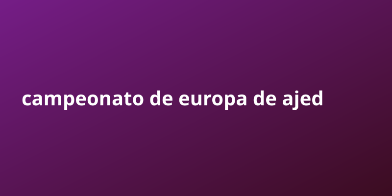

Campeonato de Europa de ajedrez sénior | Campeonato de Europa de ajedrez sénior

Entender campeonato de europa de ajedrez sénior ya no es opcional: es una ventaja competitiva para quien quiere crecer.
El Campeonato de Europa de ajedrez sénior es un torneo de ajedrez organizado por la European Chess Union (ECU). En categoría masculina, pueden participar los jugadores que tengan sesenta o más años el día 1 de enero del año en el que empiece la competición. En categoría femenina, el requisito de edad se rebaja a cincuenta o más años en las mismas condiciones.
Puntos clave sobre campeonato de europa de ajedrez sénior
- La automatizacion permite escalar sin aumentar tu tiempo. Una vez configurado, el flujo trabaja por ti 24/7.
- La informacion publica gratuita es una mina de oro subestimada. Saber recopilarla y empaquetarla es una habilidad rentable.
- Diferenciarse no requiere inventar nada: basta con curadar, organizar y entregar valor de forma clara y constante.
Por que importa
La automatizacion permite escalar sin aumentar tu tiempo. Una vez configurado, el flujo trabaja por ti 24/7. La informacion publica gratuita es una mina de oro subestimada. Saber recopilarla y empaquetarla es una habilidad rentable.
Guia paso a paso
- Investiga bien el tema de campeonato de europa de ajedrez sénior usando fuentes publicas gratuitas.
- Organiza la informacion en puntos claros y accionables.
- Crea un sistema que publique de forma automatica y constante.
- Revisa metricas y elimina lo que no aporta valor.
- Escala lo que funciona y delega el resto a la automatizacion.
Errores comunes a evitar
- Quierer hacerlo todo manualmente en lugar de automatizar.
- Ignorar la consistencia y publicar solo cuando hay tiempo.
- Copiar sin curador: el valor esta en organizar y entregar claridad.
- No medir resultados y repetir lo que no funciona.
- Subestimar el poder de la frecuencia y el volumen compuesto.
Preguntas frecuentes
¿Cuanto tiempo tarda en verse resultado con campeonato de europa de ajedrez sénior?
Depende de la constancia; con publicacion automatica, el efecto compuesto aparece semana a semana.
¿Necesito invertir dinero para empezar?
No. Con fuentes publicas y automatizacion puedes arrancar sin capital inicial.
¿Por que la frecuencia importa tanto?
Porque cada pieza suma alcance acumulado; el volumen constante vence a la perfeccion esporadica.
¿Como diferencio mi contenido?
Curado, claridad y formato: empaquetar lo publico en algo util y facil de consumir.
Checklist rapida
- Define una meta clara de campeonato de europa de ajedrez sénior y un plazo realista.
- Automatiza la parte repetitiva para no depender de tu tiempo.
- Mide resultados cada ciclo y ajusta lo que no funcione.
- Reutiliza contenido publico bien curado en vez de crear desde cero.
- Mantén consistencia: el volumen compuesto es la clave del crecimiento.
Conclusion
No esperes la situacion perfecta. Un ecosistema funcionando vale mas que diez planes en papel.
Herramienta recomendada para empezar: https://example.com/?ref=AUTONICHE